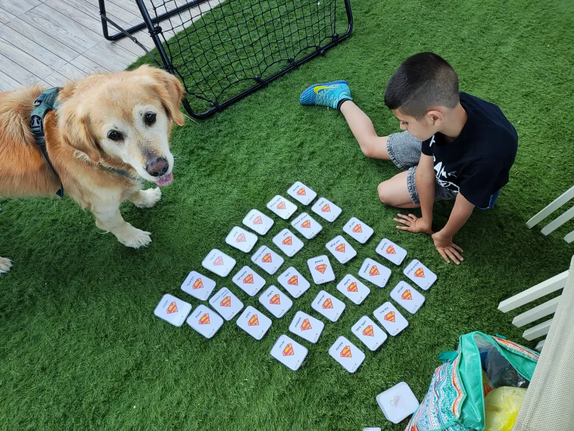
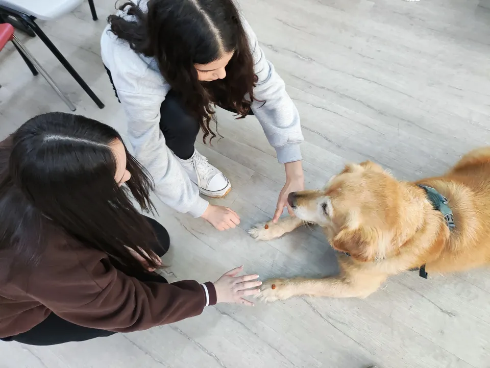

טיפול רגשי בעזרת כלבים
הגישה ההתפתחותית-היקשרותית בטיפול בעזרת כלבים
על קשר וביטחון כבסיס להתפתחות רגשית, על משחק והתנגדות, ועל הדרך שבה הכלב משתלב בגישה ההתפתחותית-היקשרותית בטיפול.
לקריאת המאמר: הגישה ההתפתחותית-היקשרותית בטיפול בעזרת כלביםעל טיפול רגשי בעזרת כלבים, על קשר ועל משחק. מחשבות מתוך המפגש ורעיונות שאפשר לקחת איתנו להמשך.
על קשר וביטחון כבסיס להתפתחות רגשית, על משחק והתנגדות, ועל הדרך שבה הכלב משתלב בגישה ההתפתחותית-היקשרותית בטיפול.
לקריאת המאמר: הגישה ההתפתחותית-היקשרותית בטיפול בעזרת כלבים
הכלב הוא שותף משמעותי בטיפול, אבל המטופל נשאר במרכז. על אחריות המטפל, מטרות המפגש והקשר שנוצר עם הכלב.
לקריאת המאמר: האם הכלב הוא המטפל?
איך הקשר עם הכלב, המשחק וההתנסות משתלבים בטיפול רגשי? על יצירת קשר, ויסות רגשי והעבודה שמתרחשת בתוך המפגש.
לקריאת המאמר: מה זה בעצם טיפול רגשי בעזרת כלבים?